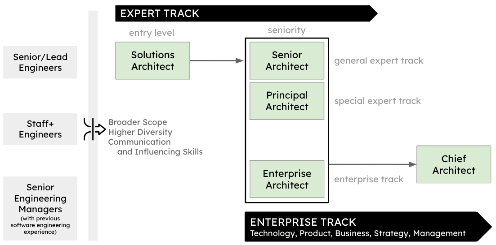

Navigating Career Paths in Architecture
IN THIS SECTION, YOU WILL: Get ideas and tips about developing architects’ career paths.
KEY POINTS:
- A strong engineering background is essential for architects to make informed technology decisions and build effective relationships with developer teams.
- Moving from an engineering role to an architecture role involves broadening scope, increasing diversity, and developing strong communication and influencer skills.
- Career tracks can include Senior Architects (broader responsibilities), Principal Architects (specialized focus), and Enterprise Architects (aligning technical strategy with business objectives).
- Architecture roles can lead to tech leadership positions such as Engineering Director or Chief Technology Officer (CTO), leveraging strategic vision, decision-making, and leadership skills.
A career path is all about the journey you take in your professional life, reflecting the roles and responsibilities you take on along the way. In any field, you might find this path to be linear, with a straightforward climb through positions, or non-linear, where you make lateral moves, dive deeper into a specialization, or even switch to different areas altogether. Both approaches offer valuable growth opportunities—what matters most is aligning your career path with your personal goals, skills, and the environment you’re in.
In this section, let’s chat about the various career trajectories available to IT architects. Whether you’re keen on becoming a technical expert or aiming for a strategic leadership role, there are plenty of avenues to explore. I’ll discuss how architects can grow within their current roles, move up to leadership positions, or even pivot into related fields like product management, operations, or executive management.
If you’re looking for practical tools and tips on managing, developing, or hiring architects, be sure to check out the Appendix—it’s packed with helpful resources.
Solid Engineering Background
My perspective on architecture is rooted in a strong engineering foundation—and for good reason. In my experience, the most effective architects tend to have a robust engineering background.

While there are always exceptions, architects lacking substantial hands-on experience in software development often struggle to make sound technical decisions and build credibility with engineering teams.
Why Engineering Experience Matters
Architects with a solid foundation in software engineering bring more than just technical knowledge—they bring practical wisdom. They have written code, debugged systems, managed technical debt, and experienced production outages. This firsthand experience enables them to:
- Make realistic decisions based on the constraints and trade-offs of real-world systems,
- Select appropriate technologies and patterns, not merely based on trends, but on the specific context,
- Identify potential pitfalls and technical challenges before they become delivery risks.
This type of experience is not theoretical—it is gained through time spent in the field. Consequently, engineers are far more likely to trust and follow the guidance of architects who have shared that journey.
Bridging Vision and Execution
A solid engineering foundation also enhances an architect’s ability to communicate effectively with development teams. Architects who are fluent in the technical language and culture of engineering can bridge the gap between high-level architectural vision and the day-to-day realities of implementation. They don’t just design solutions—they collaborate on them, guiding teams without micromanaging or over-specifying.
Thinking Like an Engineer
Engineers are trained to:
- Analyze deeply,
- Think critically,
- Solve complex, interdependent problems.
These skills are essential for architects, who must evaluate trade-offs, navigate ambiguity, and devise solutions that are both technically sound and aligned with business goals.
While becoming a great architect involves learning to think strategically, communicate cross-functionally, and lead with influence, the foundation is engineering. Without it, architecture risks becoming disconnected from implementation—an abstract exercise with minimal practical impact.
In short: real influence starts with real experience. An engineering foundation not only enhances architects’ credibility but also their capability.
Entering the Architecture Space
While a strong engineering foundation is essential, transitioning into an architecture role requires more than just technical proficiency. The shift from engineer to architect involves a significant expansion in focus, responsibilities, and skill sets. Architects work at the intersection of technology, business, and people, and succeeding in this role depends on adapting to that broader context.

Here are the three key shifts that define this transition:
1. Broader Scope
Engineers often concentrate on specific components or features. In contrast, architects must adopt a system-wide perspective. This includes:
- Considering the interactions between services, systems, and platforms,
- Understanding how different parts interact, scale, and evolve,
- Balancing performance, security, reliability, and cost across the architecture.
Architects are responsible for designing cohesive, scalable solutions that not only fit the technical landscape but also align with the strategic and operational context of the organization.
2. Higher Diversity
The architectural role comes with greater variation in both the types of work and the people you collaborate with. This includes:
- A broader array of technologies and system types,
- Exposure to business processes, compliance concerns, and customer requirements,
- Collaboration with cross-functional teams—from developers and designers to executives and finance professionals.
This diversity requires versatility. Architects must be able to context-switch, communicate across disciplines, and apply systems thinking to tackle complex and often ambiguous problems.
3. Changing Skillset
Perhaps the most significant change is the increased emphasis on communication and influence. Architects must:
- Translate technical concepts into business value,
- Communicate clearly with both technical and non-technical stakeholders,
- Build trust, facilitate decision-making, and align teams around a shared vision.
Soft skills—such as empathy, negotiation, and storytelling—become as crucial as technical expertise. Without these skills, even the best technical solutions may struggle to gain traction or deliver value.
The Role in Context
Architects must be multifaceted professionals—grounded in engineering, fluent in business, and skilled in stakeholder engagement. It’s not enough to know how to build systems; architects must also understand why those systems matter and how they support strategic goals.
The transition into architecture is not merely a promotion—it’s a paradigm shift. It represents a move from solving problems in code to addressing challenges in systems, teams, and organizations. Those who embrace this expanded scope will find architecture to be a uniquely challenging and rewarding discipline.
Career Progression in IT Architecture
A career in IT architecture is rarely one-size-fits-all. Instead, it’s a journey that can evolve in many directions, with titles, responsibilities, and areas of focus varying greatly between organizations.
Most architects begin their careers as hands-on solution architects, where they design and deliver technical solutions while remaining closely connected to engineering teams. From there, career progression typically branches into one of three key tracks (see Figure 1):
Generalist Track – Senior Architect
Senior Architects follow a generalist path characterized by breadth and adaptability. These architects:
- Tackle complex, cross-domain problems.
- Move between high-priority areas as organizational needs shift.
- Act as integrators across technical teams.
- Maintain a holistic view of system architecture and ensure its coherence.
They are especially valuable in large, fast-changing environments where flexibility and system-wide understanding are critical.
 Figure 1: Example of career paths within IT architecture.
Specialized Track – Principal Architect
Principal Architects evolve from senior roles into deep subject-matter experts. They:
- Own and advance a particular domain (e.g., data, distributed systems, frontend architecture).
- Provide thought leadership and establish a long-term vision.
- Define standards and best practices.
- Mentor engineers and other architects in their specialty.
This track is ideal for those who prefer to go deep rather than broad and want to shape the future of key architectural pillars.
Enterprise Track – Enterprise Architect
Enterprise Architects operate at the intersection of technology and business strategy. They:
- Collaborate closely with senior engineering and business leaders.
- Align architectural decisions with strategic goals.
- Navigate cross-functional initiatives that span departments and domains.
- Shape and communicate the long-term technology vision for the organization.
This track is suited for architects who enjoy thinking systemically, influencing organizational structure, and driving large-scale transformation.
Evolving Beyond Titles
While job titles and tracks provide helpful structure, true career progression in architecture is about increasing impact. The most successful architects are those who:
- Continuously learn and adapt.
- Build trust and credibility across teams.
- Drive innovation that aligns with real business needs.
- Translate abstract strategy into actionable execution.
Whether they hold a specific title or not, these architects play a critical role in the success of their teams and organizations. Their career path is defined less by hierarchy and more by the value they create and the problems they solve.
Career Progression Beyond IT Architecture
A career in IT architecture often serves as a launchpad into senior technology leadership roles, such as Engineering Director, Head of Technology, or Chief Technology Officer (CTO). This progression is both natural and achievable, as the skills and experiences gained in architectural roles closely align with the demands of executive leadership.

Why Architecture Is a Stepping Stone to Tech Leadership
Tech executives with architectural backgrounds are often trusted by engineering teams and respected by business leaders for their clarity and technical judgment.
1. Strategic Vision
Architects are trained to connect technology to business value. They design systems that meet current needs while preparing for future demands—an essential mindset for tech leaders. This long-term strategic thinking serves as the foundation for roles that shape organizational direction and innovation.
2. Cross-Functional Influence
Architects frequently collaborate with product managers, executives, operations, and finance. These interactions provide insight into how organizations function beyond just code and infrastructure. This cross-functional exposure helps architects develop a broad systems view—a critical trait for leaders who must balance priorities across departments.
3. Leadership and Mentorship
As architects advance in their careers, they often take on informal leadership roles—mentoring engineers, shaping engineering culture, and guiding project direction. These soft leadership skills—earned through influence rather than authority—translate seamlessly into formal leadership roles that require team-building, communication, and motivation.
4. Deep Technical Expertise
Unlike many pure management tracks, architects possess a strong, credible understanding of technology. This expertise enables them to:
- Make well-informed strategic decisions,
- Evaluate technical trade-offs,
- Foster innovation through architectural foresight.
From Architect to Tech Executive: A Natural Evolution
The transition from architecture to tech leadership isn’t just a change in title—it marks a shift in focus from designing systems to designing organizations and strategies. However, the core capabilities—systems thinking, strategic alignment, technical depth, and influence—remain consistent.
Many successful CTOs and Engineering Directors began their journeys as architects. Their impact at the architectural level provided a strong foundation to lead engineering organizations, innovation portfolios, and digital transformation efforts.
Whether you aspire to lead technology teams, drive enterprise strategy, or shape company-wide innovation, a career in IT architecture can offer a powerful and purposeful path forward.
To Probe Further
- Appendix: Resources for Managing, Growing, and Hiring Architects
- Appendix: Architect Archetypes
- Software Architect Archetypes, by Gergely Orosz, 2023
Questions to Consider
- Reflect on career paths in architecture. How can an engineering background impact effectiveness of an architect?
- Reflect on your career progression in architecture. How can you continuously stay relevant and make an impact in your role?
- If you were involved in the hiring process for architects, how would you assess a candidate’s technical skills, communication and collaboration skills, leadership and problem-solving abilities, and cultural fit?
- What strategies would you implement to ensure you continuously raise the bar in developing and hiring architects in your organization?
- How could you demonstrate your communication and collaboration skills as an architect? Can you share an instance where these skills are crucial?
- How would you describe your leadership and problem-solving abilities? Can you share an example of how you’ve used these skills in your work?
- Reflect on the cultural fit between you and your organization. How do your values align with those of the company?
- What steps would you include in your hiring process for architects to ensure a solid evaluation of the candidates?
- How would you ensure diversity of perspectives within your architecture team, and is this important?
On Being Architect |
|||
| ← | → | ||